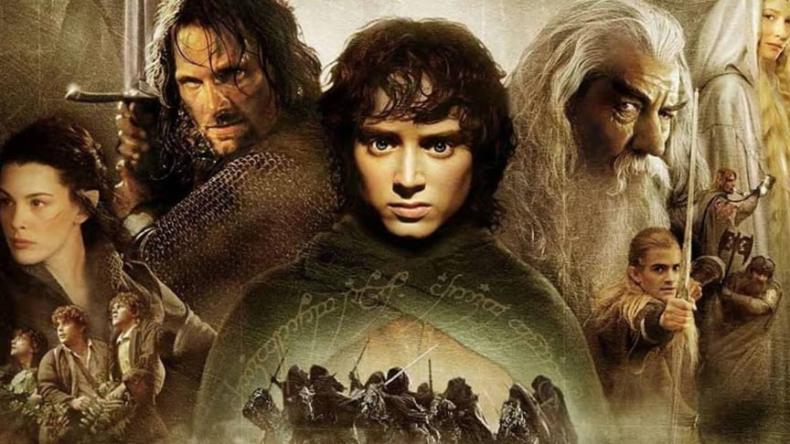

Володар перснів
Епічний фентезі фільм про боротьбу добра і зла.
Жанр: Фентезі
Епічний фентезі фільм про боротьбу добра і зла.
Жанр: Фентезі
Науково-фантастична історія про колонізацію планети Пандора.
Жанр: Наукова фантастика
Магічна історія про юного чарівника, який розпочинає навчання в Гоґвортсі.
Жанр: Фентезі, пригоди
Зворушлива історія про важливість сім'ї та мрій.
Жанр: Анімація, пригоди
Молодий лев Сімба стає королем після батькової загибелі.
Жанр: Анімація, драма, музика
Дівчина з острова вирушає в подорож, щоб врятувати свій народ.
Жанр: Анімація, пригоди, комедія
Психологічний трилер про світ снів та підсвідомість.
Жанр: Наукова фантастика, трилер
.jpg)
Історія чоловіка, який проводить роки у в'язниці, не втрачаючи надії на свободу.
Жанр: Драма, кримінал
Детектив розслідує загадкові події на ізольованому острові.
Жанр: Трилер, детектив
Весілля доньки українського батька перетворюється на справжній хаос, коли вона приводить додому свого нареченого — іноземця. Це весела комедія з колоритними персонажами, несподіваними поворотами і справжнім сімейним драйвом.
Жанр: Драма, комедія
Будинок на щастя» — це українська зоокомедія про кумедне співіснування людей і тварин під одним дахом, де кожен день — це нова пригода.
Жанр: Комедія
Комедія про пригоди містера Біна, який відправляється у відпустку до Франції.
Жанр: Комедія